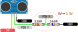
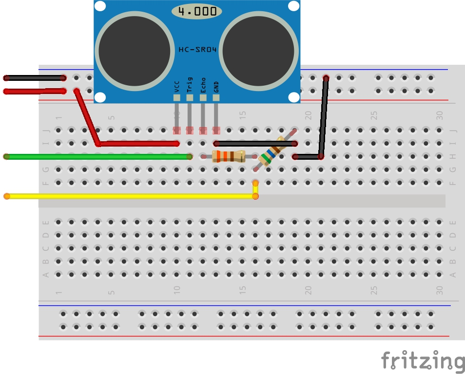

LAB - HC-SR04
| Pasta |
|---|
Lab5-HC-SR04 |
| Data da entrega: 29/03 |
Neste laboratório iremos trabalhar com o sensor de distância HC-SR04, que é muito utilizado em projetos de robótica e similares. O sensor é um módulo ultrassônico e que possibilita medirmos a distância entre o sensor e um objeto.

Para realizarmos a leitura correta do sensor, iremos utilizar os seguintes periféricos (com interrupção):
- PIO: Acionamento do sensor (pino TRIG) e leitura do pulso de echo (pino ECHO)
- TC: Contarmos o tempo do pulso de echo
- TC/ RTT: Determinar a cadência de coleta de dados
- RTC: Fornecendo o data log
HC-SR04
Refs:
- http://wiki.sunfounder.cc/index.php?title=Ultrasonic_Module
- https://www.filipeflop.com/produto/sensor-de-distancia-ultrassonico-hc-sr04/
O Sensor de Distância Ultrassônico HC-SR04 é capaz de medir distâncias de 2cm a 4m com ótima precisão e baixo custo. Este módulo possui um circuito pronto com emissor e receptor acoplados e 4 pinos (VCC, Trigger, ECHO, GND) para medição.
Para começar a medição é necessário alimentar o módulo e colocar o pino Trigger em nível alto por mais de 10us. Assim, o sensor emitirá uma onda sonora que, ao encontrar um obstáculo, rebaterá de volta em direção ao módulo. Durante o tempo de emissão e recebimento do sinal, o pino ECHO ficará em nível alto. Logo, o cálculo da distância pode ser feito de acordo com o tempo em que o pino ECHO permaneceu em nível alto após o pino Trigger ter sido colocado em nível alto.
Distância = [Tempo ECHO em nível alto * Velocidade do Som] / 2
A velocidade do som pode ser considerada idealmente igual a 340 m/s, logo o resultado é obtido em metros se considerado o tempo em segundos. Na fórmula, a divisão por 2 deve-se ao fato de que a onda é enviada e rebatida, ou seja, ela percorre 2 vezes a distância procurada.
Especificações:
- Alimentação: 5V DC
- Corrente de Operação: 2mA
- Ângulo de efeito: 15°
- Alcance.: 2cm ~ 4m
- Precisão.: 3mm
Descricão extraída do site do filipflop: https://www.filipeflop.com/produto/sensor-de-distancia-ultrassonico-hc-sr04/
Info
No Brasil o sensor custa em torno de R$14 (https://www.filipeflop.com/produto/sensor-de-distancia-ultrassonico-hc-sr04/)
Montagem
O sensor possui dois pinos (TRIG e ECHO) que devem ser ligados no uC os outros são para alimentacão (GND e VCC), como o módulo opera com 5V teremos que fazer um divisor de tensão no pino do ECHO para não danificar o nosso uC que possui tensão máxima nos pinos de 3v3.
Você deve seguir a montagem a seguir, sugerimos utilizar uma protoboard para isso. Os pinos X e Y podem ser qualquer um do EXT-2.


Warning
Você deve escolher os pinos X e Y que irão ligar no uC.
Interagindo
Após feita a montagem você deverá escrever um programa que faz o controle do sensor ultrassônico, para iniciar uma nova leitura você deve gerar um pulso de 10us no pino de Trig (Pin Y) e então aguardar pela subida do sinal do Echo (Pin X) e então contar o tempo (dT) que ele fica em alto. O valor de dT é proporcional ao tempo que o som levou para chegar até o obstáculo e voltar.
A figura a seguir demonstra como funciona a leitura do sensor.

Lab
Nesse laboratório vocês devem usar o exemplo do OLED e realizando a leitura periódica do HCSR04 exibir a distância entre o sensor e um objeto no display. Sempre que você apertar o botão da placa, uma nova leitura começa.
Comecem copiando o exemplo do OLED para o seu repositório e renomem para: Lab5-HC-SR04, ou se preferir, podem usar um dos labs passados que possui OLED e já tem os botões configurados, só lembrem de fazer uma cópia e renomear.
Dicas
________ ________
TRIG ______|////////|_____________________________________|////////|_____
^
10us |
|
_____________ | 6.inicia nova leitura
ECHO _________________|/////////////|_________ |
| | |
V V |
1.callback_echo 3.callback_echo |
| | |
V V |
2.RTT_init 4.rtt_read_timer_value |
| |
V |
5.valor para main + cálculo da distância
Setup:
- Fazer a montagem na protoboard
- Escolher dois pinos para Echo e Trig
- Configurar Trig como output e Echo como input
- Configurar irq de boarda no pino Echo
- Lembre de criar a função de callback.
Warning
Não ative PULL_UP no pino do ECHO!
Trig:
- Gerar o pulso no pino de Trig com
delay_us.
Echo:
- Iniciar o RTT na borda de subida do pino Echo
- Qual prescale usar?
- Ler valor do RTT em borda de descida do pino Echo
- Consulte a documentaćão do ASF-RTT para saber como ler o valor atual do contador.
Dicas RTT
-
Nessa primeira etapa não precisamos de nenhuma interrupção do RTT, ele vai funcionar apenas como um relógio. Passe 0 no último parâmetro da função
RTT_Init(). -
Para consultarmos o valor atual do RTT, utilize a funcão
rtt_read_timer_value
uint32_t rtt_read_timer_value ( Rtt * p_rtt )
Read the current value of the RTT timer value.
Parameters
p_rtt Pointer to an RTT instance.
Returns
The current Real-time Timer value.
Referenced by configure_rtt(), gpbr_test_configure_rtt(), main(), and refresh_display().
Conta:
- Realizar o cálculo da distância usando o valor do RTT
- Lembre de usar como base de tempo o valor que configurou no RTT.
- Exiba nos no OLED a distância atual em cm.
Ao terminar o lab preencha:
B
Estamos lidando com um sensor que pode ter falhas, o que acontece se o sensor não estiver operando direito, ou se der mal contato na ligação? ou se o som não voltar (espaço aberto). Identifique esse tipo de erro e exiba no OLED.
A
Exibir gráfico com últimos valores da distância.